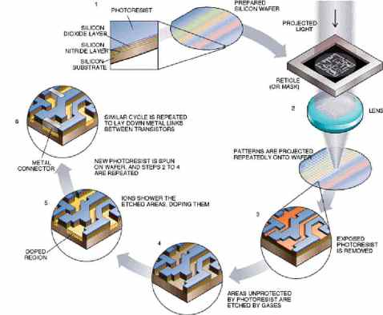

| Lithography | |
 A system for communicating. Written languages use symbols (that is, characters) to build words. The entire set of words is the language's vocabulary. The ways in which the words can be meaningfully combined is defined by the language's syntax and grammar. The actual meaning of words and combinations of words is defined by the language's semantics. In computer science, human languages are known as natural languages. Unfortunately, computers are not sophisticated enough to understand natural languages. As a result, we must communicate with computers using special computer languages. There are many different classes of computer languages, including machine languages, programming languages, and fourth-generation languages. |
|
©2006. I.T Encyclopedic Dictionary. Program designed and created by: Arjay C. Nacion |
|
Created exclusively for Mabini Colleges. |
|